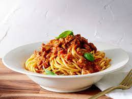
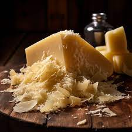

My Favorite Recipes
Spaghetti
Origin: Italian
Source: My Own Recipe
Category: Main Dish

spaghetti.jpeg
Spaghetti is my favorite main dish to make right now. It is so quick, not too many ingredients, and absolutely beginner friendly. Spaghetti is also very easy to customize with your own personal favorite flavors.
Recipe Ingredients
- Pasta
- Tomato Sauce
- Ground Beef
- Basil
- Parmesean Cheese
Recipe Steps
- Boil 2 cups of water
- Boil pasta for 9 minutes
- Cook the ground beef through
- Add tomato sauce to the ground beef
- Combine sauce and pasta
- Top with basil and parmesean
Ingredient photo gallery

dry_pasta.jpeg
tomato_sauce.jpeg
ground_beef.jpeg

basil.jpeg
parmesean.jpeg
Lily Steinmetz
Stuffed Peppers
Origin: Unknown
Source: My Own Recipe
Category: Main Dish

stuffed_pepper.jpeg
Stuffed Peppers are a close second for my favorite main dish to make. They actually have pretty similar ingredients to spaghetti, no wonder I love the taste of both!
Recipe Ingredients
- Bell Peppers
- Diced Tomato
- Ground Beef
- Basil
- Mozzerella
Recipe Steps
- Cut the tops off of your bell peppers and put them in the oven at 400 F for 20 minutes, or until soft
- Cook the ground beef through
- Add tomatoes to the ground beef
- Scoop the beef and tomato mixture into the soft bell bepper
- Sprinkle mozzerella cheese on top of the peppers
- Top with basil
Ingredient photo gallery
bell_peppers.jpeg

diced_tomatoes.jpeg
ground beef.jpeg
basil.jpeg

mozzerella.jpeg
Lily Steinmetz
Chocolate Almond Butter Bananas
Origin: Unknown
Source: My Own Recipe
Category: Dessert

banana_dessert.jpeg
These chocolate almond butter banana slices are absolutely incredible! They are super simple to make and taste delicious. They take a little bit of time to freeze, but the taste is totally worth it.
Recipe Ingredients
- Bananas
- Dark Chocolate
- Almond Butter
- Almonds
Recipe Steps
- Slice your bananas as thin as desired and pop them in the freezer until frozen.
- After they freeze, take 2 slices and put a little dollop of almond butter in the middle to make a sandwich
- Add the banana and almond butter sandwiches into the freezer
- While those harden, start to melt your dark chocolate
- Dip your banana and almond butter sandwiches into the melted dark chocolate
- Crush your almonds and roll the bananas in the almonds until covered
- Put the bananas back into the freezer and enjoy when they are frozen
Ingredient photo gallery
bananas.jpeg
dark_chocolate.jpeg